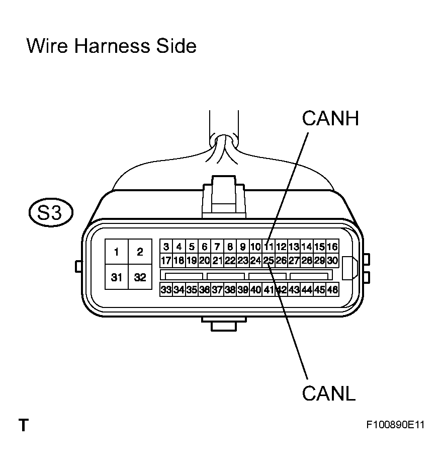
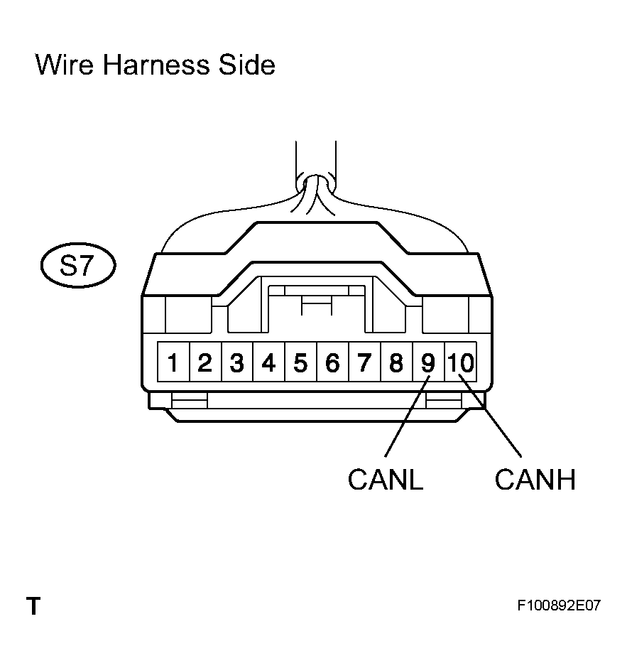
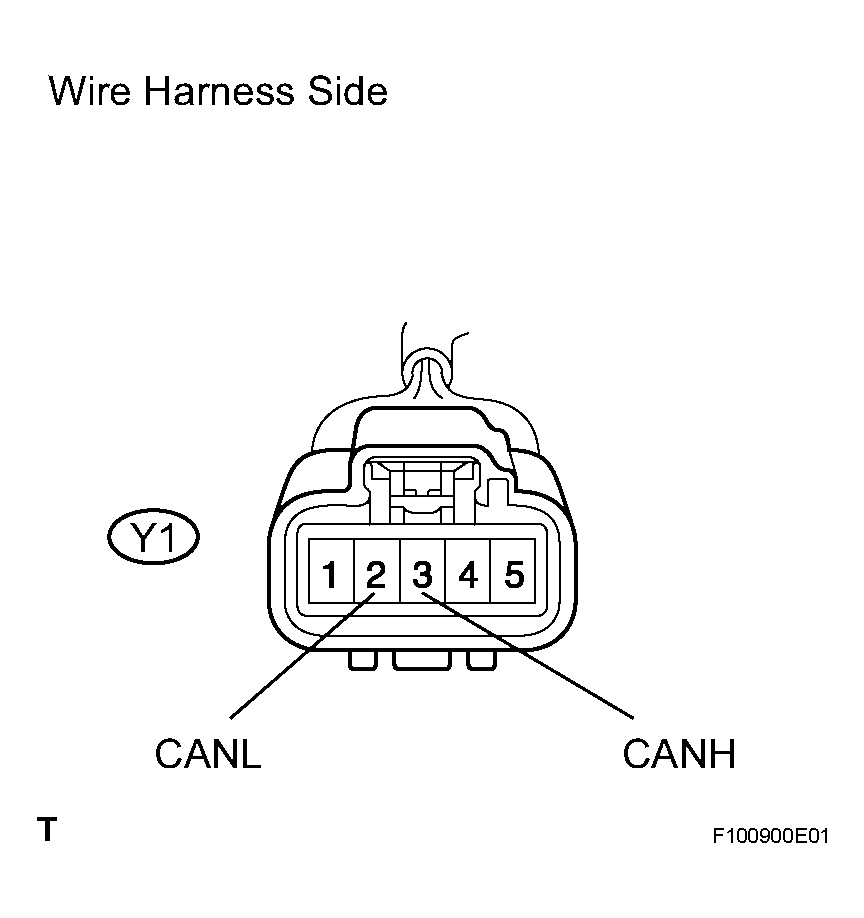

Inspection Procedure
HINT:
- Perform the following inspection for the ECUs (sensors) which are not displayed on the intelligent tester. If a malfunction cannot be identified, perform the following inspections for the ECUs (sensors) connected to the CAN communication system.
- Do not remove the A/C amplifier and ECM, as they are the end parts of the circuit. If removed, CAN communication will not be possible.
- The open circuit confirmation of the A/C amplifier, ECM and main bus is performed in the CHECK CAN BUS LINE procedure of HOW TO PROCEED WITH TROUBLESHOOTING. This inspection only has procedures for checking for an open circuit on one side of the sub bus line.
- CHECK FOR OPEN IN ONE SIDE OF CAN SUB BUS LINE (SKID CONTROL ECU)
- Disconnect the S3 ECU connector.
- Select "BUS CHECK" on the intelligent tester display via the CAN VIM (see DIAGNOSIS SYSTEM
).
Result
RESULT REFERENCEResult Proceed to ABS/VSC/TRAC are not displayed on intelligent tester. A Several ECUs and sensors other than ABS/VSC/TRAC are not displayed on intelligent tester. B
B : Go to step 3
A : Go to next step
- CHECK FOR OPEN IN ONE SIDE OF CAN SUB BUS LINE (SKID CONTROL ECU)
- Measure the resistance of the wire harness side connector.
Standard resistance:
54 to 69 Ω
NG : REPAIR OR REPLACE CAN SUB BUS LINE AND CONNECTOR (SKID CONTROL ECU)

Courtesy of © TOYOTA, LICENSE AGREEMENT TMS1002OK : REPLACE BRAKE ACTUATOR ASSEMBLY
- Measure the resistance of the wire harness side connector.
- CHECK FOR OPEN IN ONE SIDE OF CAN SUB BUS LINE (STEERING SENSOR)
- Disconnect the S7 sensor connector.
- Select "BUS CHECK" on the intelligent tester display via the CAN VIM (see DIAGNOSIS SYSTEM
).
Result
RESULT REFERENCEResult Proceed to STEERING SENSOR is not displayed on intelligent tester. A Several ECUs and sensors other than STEERING SENSOR are not displayed on intelligent tester. B
B : Go to step 5
A : Go to next step
- CHECK FOR OPEN IN ONE SIDE OF CAN SUB BUS LINE (STEERING SENSOR)
- Measure the resistance of the wire harness side connector.
Standard resistance:
54 to 69 Ω
NG : REPAIR OR REPLACE CAN SUB BUS LINE AND CONNECTOR (STEERING SENSOR)

Courtesy of © TOYOTA, LICENSE AGREEMENT TMS1002OK : REPLACE STEERING SENSOR
- Measure the resistance of the wire harness side connector.
- CHECK FOR OPEN IN ONE SIDE OF CAN SUB BUS LINE (YAW RATE SENSOR)
- Disconnect the Y1 sensor connector.
- Measure the resistance of the wire harness side connector.
Standard resistance:
54 to 69 Ω
NG : REPAIR OR REPLACE CAN SUB BUS LINE AND CONNECTOR (YAW RATE SENSOR)

Courtesy of © TOYOTA, LICENSE AGREEMENT TMS1002OK : REPLACE YAW RATE SENSOR